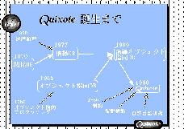

<html>
<head>
<title> Slide No.3 </title>
</head>

<frameset rows="430,130">

<noframes>
<body>
<a href="GIF/slide3.GIF"></a>

<a href="AU/voice3.au">
	</a>[736K]<p>
<!--		-->
ここで、<b> Quixote </b> が誕生するまでを簡単に振り返ってみましょう。<p>

1970年、E.F.Codd によって、表を基本データ構造とする
<a href=""> 関係データベース </a> が
誕生しました。それと、1950年代の論理と計算機を繋げようという考え方が
結び付いて、1977年 <a href=""> 演繹データベース </a> が
誕生します。<p>

これらとはまた違うところで、1960年代半ばにオブジェクト指向プログラミング
が生まれ、それを元として、1985年
<a href=""> オブジェクト指向データベース </a> が
誕生します。<p>

この演繹データベースとオブジェクト指向データベースを比べてみると、
前者は、論理を元として形式的基礎が明確ですが、実験システムが
いくつかあるに留まっています。後者は、商用システムなど沢山ありますが、
形式的基礎が不明確です。つまり、これらの長所と短所は互いに相補的な
関係にあります。<p>

そこで、演繹データベースとオブジェクト指向データベースを旨く
組合わせれば、強力なデータベースが作れるのではないかと考えられ、
1989年 <a href=""> 演繹オブジェクト指向データベース </a> が
誕生します。<p>

この演繹オブジェクト指向データベースを元として、
制約、仮説推論、自然言語研究の成果を取り入れて、
1990 年 <a href=""> <b> Quixote </b> </a> が誕生しました。<p>

次に、<b> Quixote </b> の具体的特徴を説明します。
<p>
<!--		-->

<hr>
<a href="slide4.html" target="_top">次の OHP へ</a>
<br><br>
<a href="slide2.html" target="_top">前の OHP へ</a>
<br><br>
<a href="HomePage.html" target="_top">OHP の一覧へ</a>
</body>
</noframes>

<frame src="onlyslide3.html">
<frame src="buttonexpla3.html">

</frameset>

</html>
